Every fairy tale concludes with the prince and princess living happily ever after. These are our most innocent and sincere wishes. However, as modern individuals lament the mounting pressures of work and life, alongside the escalating issues of depression and other mental health disorders, our happiness seems elusive. Happiness has become a crucial measurement of our well-being as well as a nation’s success. It’s a fundamental human right, just like health. Every person has the right to happiness; it is affecting us both mental and physical health. It has also become an integral indicator for national policy and operational objective for governments.
But how do we quantify happiness? What are the sources of our happiness? Are we truly happy or unhappy? Is the world happy? How can we enhance our level of happiness? These are the questions we seek to answer through this project. Understanding what drives happiness can help in formulating policies that improve the quality of life for citizens. By studying the factors that affect happiness, we can contribute to a multidisciplinary understanding of well-being, which in turn can inform a variety of practical applications aimed at improving people’s lives at both the individual and collective levels.
Our mission is to conduct a comprehensive analysis of the factors influencing global happiness scores across the years 2015 to 2019. Through in-depth exploration and examination of Economic production (gdp per capita), social support, life expectancy, freedom, absence of corruption, and generosity, we aim to identify and understand the key determinants that contribute to varying happiness levels among nations during this period. By regression analysis, our goal is to unravel the relationships between happiness score and six factors. Other research questions help us know more about the distribution happiness score, and six factors, respectively. Ultimately, our research seeks to provide insights that can illuminate policy decisions and societal interventions, health system development fostering a deeper understanding of what drives happiness worldwide and how it evolves over time.
We sourced our data from The World Happiness Report, first published in 2012. This report gathers surveys from a nationally-representative sample of individuals, inquiring about their life satisfaction and their views on six factors: income, health, having reliable support, freedom to make life decisions, generosity, and the absence of government corruption. It then ranked around 155-158 countries base on the happiness score collected each year. We chose to utilize The World Happiness Reports published between 2015 and 2019, the pre-COVID period. The data can be accessed here. Each year’s report is available as a separate CSV file, resulting in a total of five datasets. Each dataset comprises various variables, necessitating data cleaning and merging for analysis.
We imported five dataset into RStudio. In order to merge them, we
need to make sure all datasets have the same variables. We first updated
all variable to snake cases, removed the unwanted variables
and added a year variable representing the year for each
dataset. Because only 2015 and 2016 data
recorded region for each country, we extracted
the country and region variables into separate
data frame and left_join it into 2017,
2018 and 2019 by country. We then
stack all five dataset into our final dataset using
bind_row. We then check if there’s any missing or miscoded
values. Because there are new counties entering into the survey and
ranking in 2017, 2018 and 2019,
with no region recorded, and the dataset records same country
differently in each year. We manually updated the value using
mutate(). The code is read as following:
library(tidyverse)data2015_df = read_csv("./data/2015.csv")|>
janitor::clean_names()|>
mutate(year=2015)|>
select(- standard_error, -dystopia_residual)|>
select(year, country, region, rank, score, everything() )
data2016_df = read_csv("./data/2016.csv")|>
janitor::clean_names()|>
mutate(year=2016)|>
select(- lower_confidence_interval, - upper_confidence_interval, -dystopia_residual)|>
select(year, country, region, rank, score, everything() )
region_df = data2015_df|>
select(country, region)
data2017_df = read_csv("./data/2017.csv")|>
janitor::clean_names()|>
mutate(year=2017)|>
select(- whisker_high, - whisker_low, -dystopia_residual)|>
select(-generosity, everything(), generosity)
data2017_df = left_join(data2017_df, region_df)|>
select(year, country, region, everything())
data2018_df = read_csv("./data/2018.csv")|>
janitor::clean_names()|>
mutate(
year=2018)|>
select(-generosity, everything(), generosity)
data2018_df = left_join(data2018_df, region_df)|>
select(year, country, region, everything())|>
mutate(
perception_of_corruption = as.numeric(perception_of_corruption)
)
data2019_df = read_csv("./data/2019.csv")|>
janitor::clean_names()|>
mutate(year=2019)|>
select(-generosity, everything(), generosity)
data2019_df = left_join(data2019_df, region_df)|>
select(year, country, region, everything())
hap_df = bind_rows(data2015_df, data2016_df, data2017_df, data2018_df, data2019_df)|>
mutate(
region = if_else(country == "Taiwan Province of China", "Eastern Asia", region),
region = if_else(country == "Hong Kong S.A.R., China", "Eastern Asia", region),
region = if_else(country == "Belize", "Latin America and Caribbean", region),
region = if_else(country == "Somalia", "Sub-Saharan Africa", region),
region = if_else(country == "Namibia", "Sub-Saharan Africa", region),
region = if_else(country == "South Sudan", "Sub-Saharan Africa", region),
region = if_else(country == "Trinidad & Tobago", "Latin America and Caribbean", region),
region = if_else(country == "Northern Cyprus", "Western Europe", region),
region = if_else(country == "North Macedonia", "Central and Eastern Europe", region),
region = if_else(country == "Gambia", "Sub-Saharan Africa", region),
country = if_else(country == "Hong Kong S.A.R., China", "Hong Kong", country),
country = if_else(country == "Northern Cyprus", "North Cyprus", country),
country = if_else(country == "Somaliland region", "Somalia", country),
country = if_else(country == "Taiwan Province of China", "Taiwan", country),
country = if_else(country == "Trinidad & Tobago", "Trinidad and Tobago", country)
)
write_csv(hap_df, "./data/combined_happiness.csv")The final dataset has 782 observations. There are 11 variables:
year: The year of the surveys. country:
Name of the countries. region: region of the countries.
There are 10 regions in the Dataset. rank: Rank of the
countries base on happiness score. score: Happiness Score
of the countries, with 10 representing the best possible life and 0
being the lowest. gdp_per_capita: Measurement on income and
GDP per Capital, value ranges from 0 – 2.10.
social support: Measurement on having someone to count on
in times of trouble, value ranges from 0 to 1.65.
health_life_expectancy: Measurement on healthy life
expectancy, which also reflects mental and physical health, value ranges
from 0 to 1.15. freedom_to_make_choices: Measurement on
freedom to choose what you do with your life, which also reflects human
rights. Human rights include the right to life and liberty, freedom from
slavery and torture, freedom of opinion and expression, the right to
work and education, and many more. Everyone is entitled to these rights
without discrimination. Value ranges from 0 – 0.75.
perception_of_corruption: Measurement on if people think
there’s corruption widespread throughout the government and within
businesses, and if people trust their governments and have trust in the
benevolence of others. Values ranges from 0 – 0.6. Please note that
higher scores representing lower perception of corruption and higher
trust of the government. generosity: Measurement on if
people donated money to the charity, which is a sense of positive
community engagement. Value ranges from 0-0.85. year,
country and region is factor and categorical
variables. All the other variables are numeric and continuous
variables.
Later in the data analysis, we also added the ISO3 code
(ISO3) to the dataset for the purpose of outputting
geographic plot.
We first performed exploratory data analysis to explore and visualize the current distribution of happiness and each of the six factors that thought to impact happiness around the world at country and region level. We are interested in finding which part of the world has the highest versus lowest happiness score as well as which part of the world has the highest versus lowers score of income, social support,health, freedom, perception of government corruption and generosity. In order to best depict the true nature of our data, we used a combination bar plots, heatmap, and scatter plot, and create a interactive shiny app on the six happiness factor.
For the happiness score, we found that the geographic distribution of World Happiness Score is stable from 2015 to 2019. European Countries such as Finland, Switzerland, and Denmark tend to have highest happiness score while African countries such as South Sudan and Central African Republic tend to have lowest happiness score. Also, countries in Europe, Australia, North and South America have higher happiness score while countries in Africa and Middle East Asia has relatively lower happiness score.
From 2015 to 2019, Australia and New Zealand has stable happiness scores and it’s the highest among 10 regions. North America has second highest happiness score among 10 regions with the highest happiness score in year 2015 and gradually decreasing trend. Western Europe has the third highest happiness score with an increasing trend in 5 years. Latin America and Caribbean has the fourth highest happiness score with a decreasing trend in 5 years. Eastern Asia has the fifth highest happiness score with a stable trend. Middle East and Northern Africa, Southeastern Asia, and Central and Eastern Europe have comparative happiness score from 2015 to 2017, but Central and Eastern Europe has a increasing trend and higher happiness score after year 2017 while the other two regions have a decreasing trend and lower happiness score after year 2017. Southern Asia and Sub-Saharan Africa has the second lowest and lowest happiness score in 5 years, respectively. However, Sub-Saharan Africa has shown an increasing trend while Southern Asia has shown an decreasing trend since year 2017.
For the six happiness indicators, we found that The GDP per Capita increases from 2015 to 2017, then decreased from 2017 to 2018. There’s a slight increase from 2018 to 2019 but the world has the highest GDP per Capita in 2017. The social support decreased from 2015 to 201 with a significant increase from 2016 top 2017, then it stayed relatively stable. The healthy life expectancy score decreased from 2016 to 2017 then increased from 2017 to 2019. The freedom of choices decrease from 2015 to 2016, increased from 2016 to 2018 and decreased again in 2019. The proception of corruption stayed relatively stable but the world generally is seeing increasing corruptions. The generosity decrease from 2017 to 2018 which in align with the trend of GDP per Capita, suggesting possible association between people’s income and their generosity around the world. However, it’s worth noting that the countries with highest income are not the countries with top generosity scores. Overall, social support and healthy life expectancy improved from 2015 to 2019.
We noticed that at regional level, Australia and New Zealand ranked first in 4 four out of 6 factors and North American ranked first in 1 out of the other 2. It is worth mentioning that North American revision only has two countries, USA and Canada. Australia and New Zealand also only has two countries, Australia, and New Zealand. They may have high average scores and less variable with in the region than the other 8 regions. The other regions might have countries with very high score and very low score which impacted the averages core. This will require further analysis.
Also there are not much discrepancy found in trend between the 10 regions and the regional trends align with the world trends as well.
library(tidyverse)
library(plotly)
library(purrr)hap_df = read_csv("./data/combined_happiness.csv")|>
mutate(
year = as.factor(year)
)
regional_hap_df = hap_df|>
group_by(region,year) |>
summarise(
average_gdp_per_capita = mean(gdp_per_capita, na.rm = TRUE),
average_social_support = mean(social_support, na.rm = TRUE),
average_healthy_life_expectancy = mean(health_life_expectancy, na.rm = TRUE),
average_freedom_to_make_life_choices = mean(freedom_to_make_life_choices, na.rm = TRUE),
average_perception_of_corruption = mean(perception_of_corruption, na.rm = TRUE),
average_generosity = mean(generosity, na.rm = TRUE)
)|>
pivot_longer(
average_gdp_per_capita:average_generosity,
names_to ="factor",
names_prefix = "average_",
values_to = "average_score"
)iso_codes = countrycode::codelist[, c("un.name.en", "iso3c")]
names(iso_codes) = c("Country", "ISO3")world_data <- ggplot2::map_data('world')
world_data <- fortify(world_data)hap_df['ISO3'] <- iso_codes$ISO3[match(hap_df$country, iso_codes$Country)]
world_data["ISO3"] <- iso_codes$ISO3[match(world_data$region, iso_codes$Country)]hap_df = hap_df |>
mutate(
ISO3 = if_else(country == "United States", "USA", ISO3),
ISO3 = if_else(country == "United Kingdom", "GBR", ISO3),
ISO3 = if_else(country == "Venezuela", "VEN", ISO3),
ISO3 = if_else(country == "Czech Republic", "CZE", ISO3),
ISO3 = if_else(country == "Taiwan", "TWN", ISO3),
ISO3 = if_else(country == "South Korea", "KOR", ISO3),
ISO3 = if_else(country == "Bolivia", "BOL", ISO3),
ISO3 = if_else(country == "Moldova", "MDA", ISO3),
ISO3 = if_else(country == "Russia", "RUS", ISO3),
ISO3 = if_else(country == "Hong Kong", "CHN", ISO3),
ISO3 = if_else(country == "Vietnam", "VNM", ISO3),
ISO3 = if_else(country == "Turkey", "TUR", ISO3),
ISO3 = if_else(country == "Macedonia", "MKD", ISO3),
ISO3 = if_else(country == "Laos", "LAO", ISO3),
ISO3 = if_else(country == "Swaziland", "SWZ", ISO3),
ISO3 = if_else(country == "Palestinian Territories", "PSE", ISO3),
ISO3 = if_else(country == "Iran", "IRN", ISO3),
ISO3 = if_else(country == "Congo (Kinshasa)", "COD", ISO3),
ISO3 = if_else(country == "Congo (Brazzaville)", "COG", ISO3),
ISO3 = if_else(country == "Tanzania", "TZA", ISO3),
ISO3 = if_else(country == "Syria", "SYR", ISO3),
ISO3 = if_else(country == "Puerto Rico", "PRI", ISO3)
)|>
mutate(country = recode(str_trim(country),
"United States" = "USA",
"United Kingdom" = "UK",
"Congo (Kinshasa)" = "Democratic Republic of the Congo",
"Congo (Brazzaville)" = "Republic of Congo"))world_data = world_data|>
mutate(country = region)|>
select(-region)
worldjoin <- inner_join(world_data, hap_df, by = "country")## compile all map theme configurations
cleanup <- theme(
axis.text = element_blank(),
axis.line = element_blank(),
axis.ticks = element_blank(),
panel.border = element_blank(),
panel.grid = element_blank(),
axis.title = element_blank(),
panel.background = element_rect(fill = "white"),
plot.title = element_text(hjust = 0.5)
)
## plot our merged data
gdp <- worldjoin %>%
ggplot(mapping = aes(
x=long,
y=lat,
group=group)) +
scale_fill_viridis_c(option = "C") +
coord_fixed(1.3) +
geom_polygon(aes(fill=gdp_per_capita)) +
ggtitle("GDP Per Capita") +
cleanup
gdp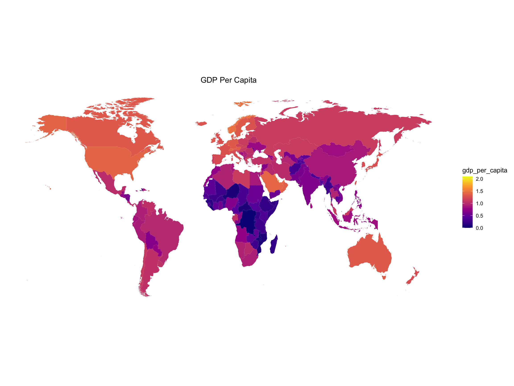
At Country Level
combined_happiness|>
filter(year == "2015")|>
mutate(country = fct_reorder(country, score))|>
plot_ly(
x = ~country, y = ~score, color = ~region,
type = 'bar', colors = 'viridis'
)|>
layout(
title = "2015 World Happiness Score Rank",
xaxis = list(title = "Countries", tickfont = list(size = 6)),
yaxis = list(title = "Happiness Score"),
autosize = FALSE,
width = 800,
height = 500
)At Region Level
combined_happiness |>
filter(year == "2015") |>
group_by(region) |>
mutate(region_avg = mean(score)) |>
arrange(desc(region_avg)) |>
summarize(region = unique(region), score = unique(region_avg)) |>
ggplot(aes(x = reorder(region, -score), y = score, fill = region)) +
geom_bar(stat = "identity") +
labs(title = "2015 World Happiness Score Rank", x = "Regions", y = "Happiness Score") +
scale_x_discrete(labels = label_wrap_gen(width = 10)) +
theme(legend.position = "none")hp_2015 <- worldjoin |>
filter(year == "2015") |>
ggplot(mapping = aes(
x=long,
y=lat,
group=group)) +
scale_fill_viridis_c(option = "C") +
coord_fixed(1.3) +
geom_polygon(aes(fill=score)) +
ggtitle("Happiness Score 2015") +
cleanup
hp_2015At country level, in year 2015, Switzerland has the highest happiness score while Togo has the lowest happiness score among 158 countries.
At Region Level, in year 2015, Australia and New Zealand has the highest happiness score while Sub-Saharan Africa has the lowest happiness score among 10 regions.
In general, countries in Europe, Australia, North and South America have higher happiness score while countries in Africa and Middle East Asia has relatively lower happiness score in 2015.
At Country Level
combined_happiness|>
filter(year == "2016")|>
mutate(country = fct_reorder(country, score))|>
plot_ly(
x = ~country, y = ~score, color = ~region,
type = 'bar', colors = 'viridis'
)|>
layout(
title = "2016 World Happiness Score Rank",
xaxis = list(title = "Countries", tickfont = list(size = 6)),
yaxis = list(title = "Happiness Score"),
autosize = FALSE,
width = 800,
height = 500
)At Region Level
combined_happiness |>
filter(year == "2016") |>
group_by(region) |>
mutate(region_avg = mean(score)) |>
arrange(desc(region_avg)) |>
summarize(region = unique(region), score = unique(region_avg)) |>
ggplot(aes(x = reorder(region, -score), y = score, fill = region)) +
geom_bar(stat = "identity") +
labs(title = "2016 World Happiness Score Rank", x = "Regions", y = "Happiness Score") +
scale_x_discrete(labels = label_wrap_gen(width = 10)) +
theme(legend.position = "none")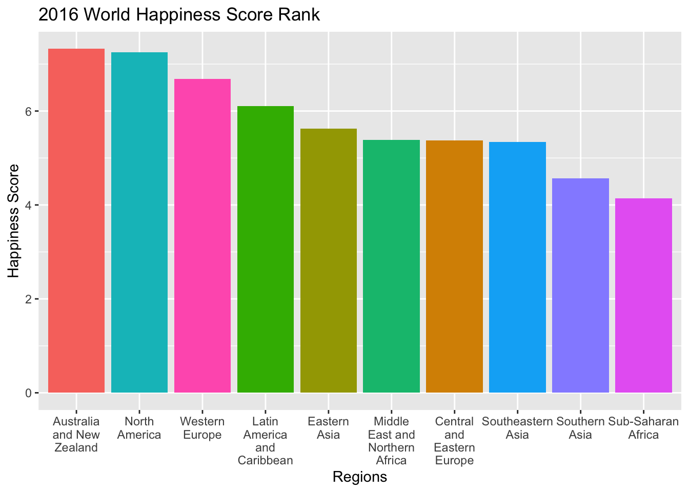
hp_2016 <- worldjoin |>
filter(year == "2016") |>
ggplot(mapping = aes(
x=long,
y=lat,
group=group)) +
scale_fill_viridis_c(option = "C") +
coord_fixed(1.3) +
geom_polygon(aes(fill=score)) +
ggtitle("Happiness Score 2016") +
cleanup
hp_2016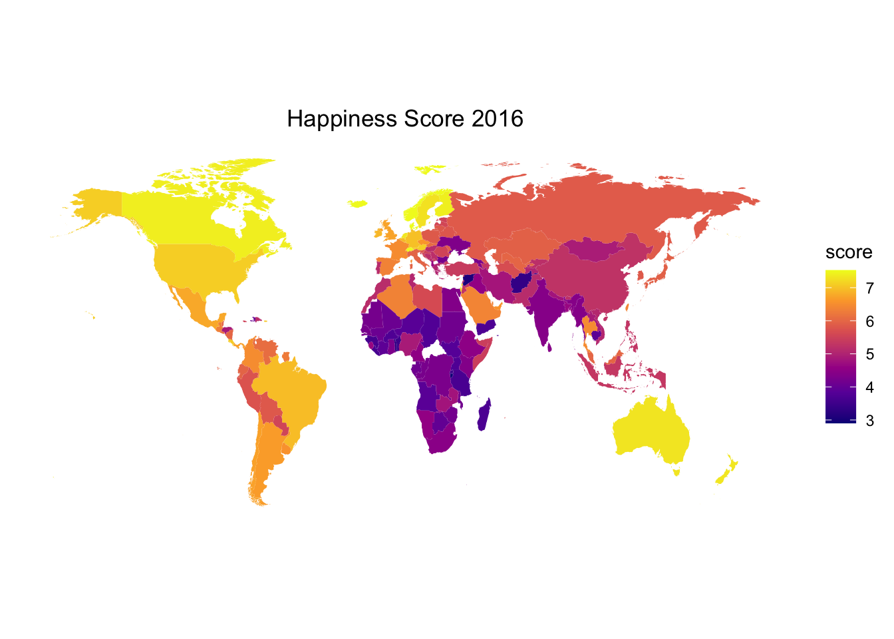
At country level, in year 2016, Denmark has the highest happiness score while Burundi has the lowest happiness score among 157 countries.
At region level, in year 2016, Australia and New Zealand has the highest happiness score while Sub-Saharan Africa has the lowest happiness score among 10 regions.
In general, countries in Europe, Australia, North and South America have higher happiness score while countries in Africa and Middle East Asia has relatively lower happiness score in 2016
At Country Level
combined_happiness|>
filter(year == "2017")|>
mutate(country = fct_reorder(country, score))|>
plot_ly(
x = ~country, y = ~score, color = ~region,
type = 'bar', colors = 'viridis'
)|>
layout(
title = "2017 World Happiness Score Rank",
xaxis = list(title = "Countries", tickfont = list(size = 6)),
yaxis = list(title = "Happiness Score"),
autosize = FALSE,
width = 800,
height = 500
)At Region Level
combined_happiness |>
filter(year == "2017") |>
group_by(region) |>
mutate(region_avg = mean(score)) |>
arrange(desc(region_avg)) |>
summarize(region = unique(region), score = unique(region_avg)) |>
ggplot(aes(x = reorder(region, -score), y = score, fill = region)) +
geom_bar(stat = "identity") +
labs(title = "2017 World Happiness Score Rank", x = "Regions", y = "Happiness Score") +
scale_x_discrete(labels = label_wrap_gen(width = 10)) +
theme(legend.position = "none")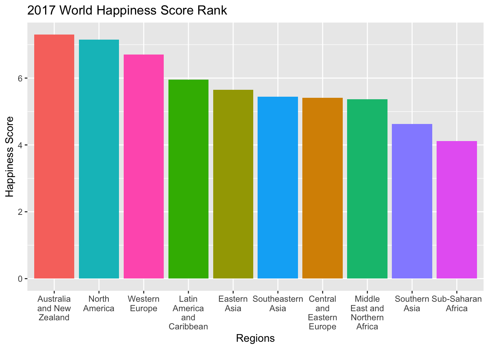
hp_2017 <- worldjoin |>
filter(year == "2017") |>
ggplot(mapping = aes(
x=long,
y=lat,
group=group)) +
scale_fill_viridis_c(option = "C") +
coord_fixed(1.3) +
geom_polygon(aes(fill=score)) +
ggtitle("Happiness Score 2017") +
cleanup
hp_2017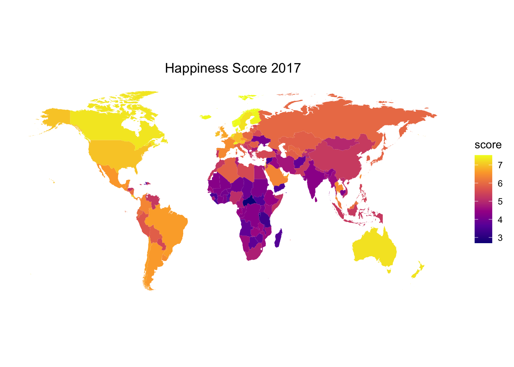
At country level, in year 2017, Norway has the highest happiness score while Central African Republic has the lowest happiness score among 155 countries.
At region level, In year 2017, Australia and New Zealand has the highest happiness score while Sub-Saharan Africa has the lowest happiness score among 10 regions.
In general, countries in Europe, Australia, North and South America have higher happiness score while countries in Africa and Middle East Asia has relatively lower happiness score in 2017.
At Country Level
combined_happiness|>
filter(year == "2018")|>
mutate(country = fct_reorder(country, score))|>
plot_ly(
x = ~country, y = ~score, color = ~region,
type = 'bar', colors = 'viridis'
)|>
layout(
title = "2018 World Happiness Score Rank",
xaxis = list(title = "Countries", tickfont = list(size = 6)),
yaxis = list(title = "Happiness Score"),
autosize = FALSE,
width = 800,
height = 500
)At Region Level
combined_happiness |>
filter(year == "2018") |>
group_by(region) |>
mutate(region_avg = mean(score)) |>
arrange(desc(region_avg)) |>
summarize(region = unique(region), score = unique(region_avg)) |>
ggplot(aes(x = reorder(region, -score), y = score, fill = region)) +
geom_bar(stat = "identity") +
labs(title = "2018 World Happiness Score Rank", x = "Regions", y = "Happiness Score") +
scale_x_discrete(labels = label_wrap_gen(width = 10)) +
theme(legend.position = "none")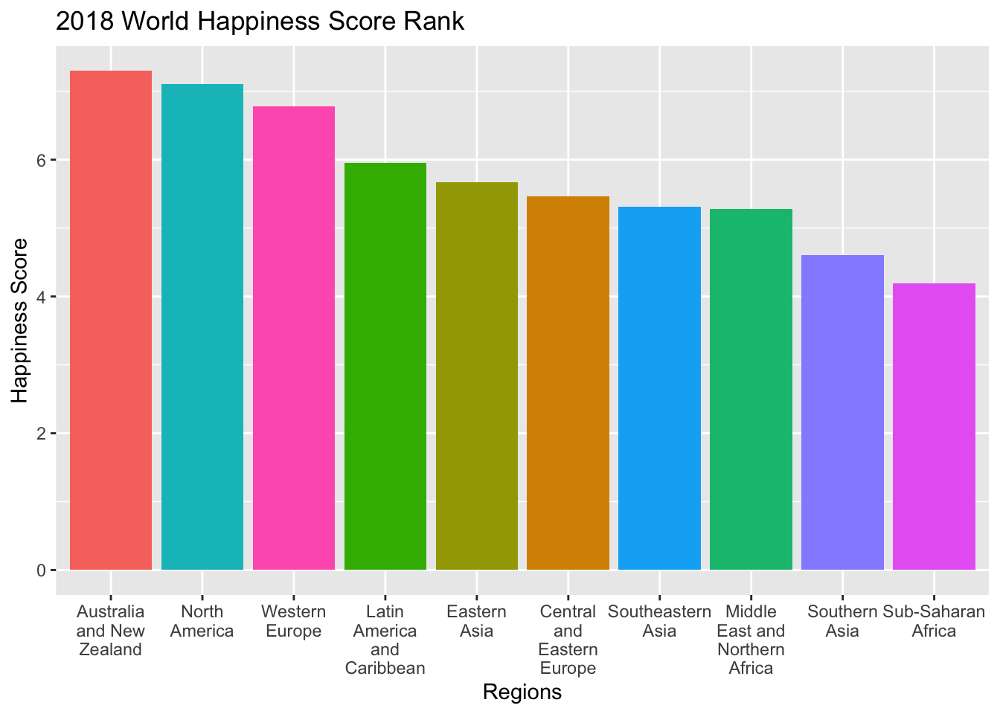
hp_2018 <- worldjoin |>
filter(year == "2018") |>
ggplot(mapping = aes(
x=long,
y=lat,
group=group)) +
scale_fill_viridis_c(option = "C") +
coord_fixed(1.3) +
geom_polygon(aes(fill=score)) +
ggtitle("Happiness Score 2018") +
cleanup
hp_2018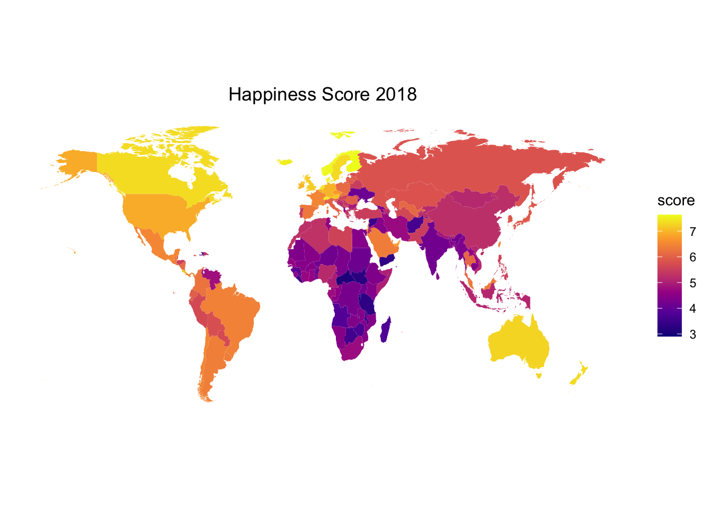
At country level, in year 2018, Finland has the highest happiness score while Burundi has the lowest happiness score among 156 countries.
At region level, in year 2018, Australia and New Zealand has the highest happiness score while Sub-Saharan Africa has the lowest happiness score among 10 regions.
In general, countries in Europe, Australia, North and South America have higher happiness score while countries in Africa and Middle East Asia has relatively lower happiness score in 2018.
At Country Level
combined_happiness|>
filter(year == "2019")|>
mutate(country = fct_reorder(country, score))|>
plot_ly(
x = ~country, y = ~score, color = ~region,
type = 'bar', colors = 'viridis'
)|>
layout(
title = "2019 World Happiness Score Rank",
xaxis = list(title = "Countries", tickfont = list(size = 6)),
yaxis = list(title = "Happiness Score"),
autosize = FALSE,
width = 800,
height = 500
)At Region Level
combined_happiness |>
filter(year == "2019") |>
group_by(region) |>
mutate(region_avg = mean(score)) |>
arrange(desc(region_avg)) |>
summarize(region = unique(region), score = unique(region_avg)) |>
ggplot(aes(x = reorder(region, -score), y = score, fill = region)) +
geom_bar(stat = "identity") +
labs(title = "2019 World Happiness Score Rank", x = "Regions", y = "Happiness Score") +
scale_x_discrete(labels = label_wrap_gen(width = 10)) +
theme(legend.position = "none")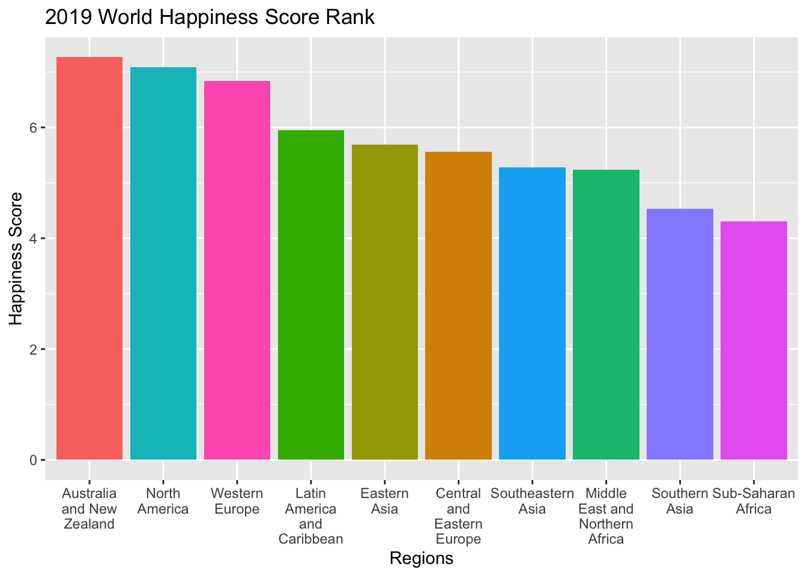
hp_2019 <- worldjoin |>
filter(year == "2019") |>
ggplot(mapping = aes(
x=long,
y=lat,
group=group)) +
scale_fill_viridis_c(option = "C") +
coord_fixed(1.3) +
geom_polygon(aes(fill=score)) +
ggtitle("Happiness Score 2019") +
cleanup
hp_2019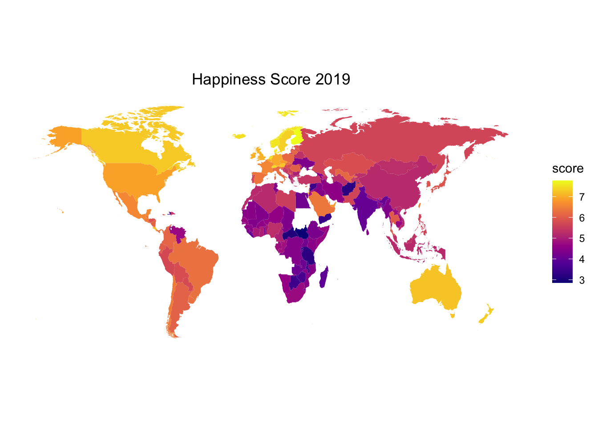
At country level, in year 2019, Finland has the highest happiness score while South Sudan has the lowest happiness score among 156 countries.
At region level, in year 2019, Australia and New Zealand has the highest happiness score while Sub-Saharan Africa has the lowest happiness score among 10 regions.
In general, countries in Europe, Australia, North and South America have higher happiness score while countries in Africa and Middle East Asia has relatively lower happiness score in 2019
At Country Level
hp_avg =
combined_happiness |>
select(year, country, region, score) |>
pivot_wider(
names_from = "year",
values_from = "score"
) |>
na.omit() |>
pivot_longer(
"2015":"2019",
names_to = "year",
values_to = "score"
) |>
group_by(year, country) |>
mutate(score_avg = mean(score))
hp_avg|>
arrange(desc(score_avg)) |>
ggplot(aes(x = reorder(country, -score_avg), y = score_avg, fill = region)) +
geom_bar(stat = "identity") +
labs(title = "Average World Happiness Score Rank 2015-2019", x = "Countries", y = "Happiness Score") +
theme(axis.text.x = element_text(angle = 90, vjust = 0.5, hjust=1, size = 4)) +
guides(fill = guide_legend(nrow = 3)) +
theme(legend.text = element_text(size = 6)) +
theme(legend.position = "bottom", plot.margin = margin(b = 10))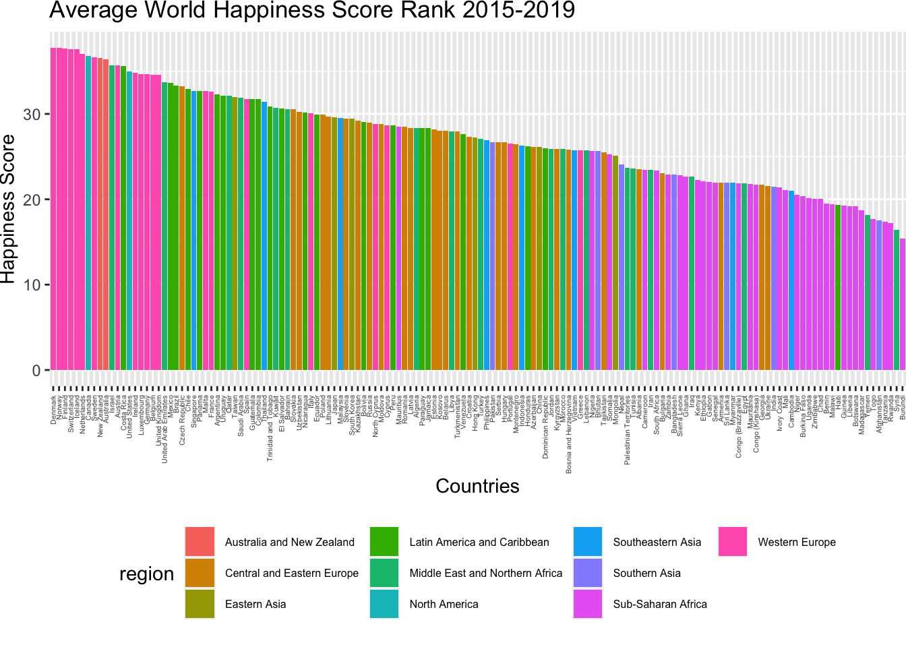
At Region Level
hp_avg|>
group_by(region) |>
mutate(region_avg = mean(score)) |>
arrange(desc(score_avg)) |>
summarize(region = unique(region), score = unique(region_avg)) |>
ggplot(aes(x = reorder(region, -score), y = score, fill = region)) +
geom_bar(stat = "identity") +
labs(title = "Average World Happiness Score Rank 2015-2019", x = "Countries", y = "Happiness Score") +
scale_x_discrete(labels = label_wrap_gen(width = 10)) +
theme(legend.position = "none")wold_avg <- inner_join(world_data, hp_avg, by = "country")
hp_avg_plot <- wold_avg |>
ggplot(mapping = aes(
x=long,
y=lat,
group=group)) +
scale_fill_viridis_c(option = "C") +
coord_fixed(1.3) +
geom_polygon(aes(fill=score_avg)) +
ggtitle("Average Happiness Score in 5 years") +
cleanup
hp_avg_plot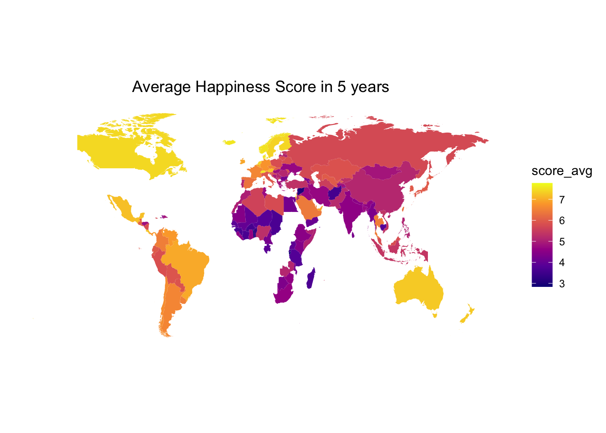
At country level, we only keep countries that are in the top rank for all five years. Among those 144 countries, Danmark has the highest average happiness score while Burundi has the lowest average happiness score in 5 years.
At region level, from 2015 to 2019, Australia and New Zealand has the highest average happiness score while Sub-Saharan Africa has the lowest average happiness score among 10 regions.
In general, countries in Europe, Australia, North and South America have higher average happiness score while countries in Africa and Middle East Asia has relatively lower average happiness score from 2015 to 2019.
At Country Level
hap_df |>
mutate(country = fct_reorder(country, gdp_per_capita))|>
plot_ly (
x = ~country, y = ~gdp_per_capita, color = ~year,
type = "bar", colors = "viridis") |>
layout(
title = "GDP Per Capita",
xaxis = list(
title = "country",
tickfont = list(size = 6)
),
yaxis = list(title = "GDP Per Capita"),
autosize = F, width = 800, height = 500
)At Region Level
hap_df |>
mutate(region = fct_reorder(region, gdp_per_capita))|>
group_by(region, year)|>
summarise(
average_gdp_per_capita = mean(gdp_per_capita, na.rm = TRUE)
) |>
plot_ly (
x = ~region, y = ~average_gdp_per_capita, color = ~year,
type = "bar", colors = "viridis") |>
layout(
title = "GDP Per Capita By Region",
xaxis = list(title = "Region"),
yaxis = list(title = "Average Score"),
autosize = F, width = 800, height = 500
)Regional Trend
regional_hap_df |>
filter(factor == "gdp_per_capita")|>
plot_ly(
x = ~year, y = ~average_score, color = ~region,
mode = 'lines+markers', type = 'scatter', colors = 'viridis',
name = ~region) |>
layout(
title = paste("Regional Trend for GDP Per Captia from 2015 to 2019"),
xaxis = list(title = "Year"),
yaxis = list(title = "Average Score"),
autosize = F, width = 820, height = 500
)At countries level, from 2015 to 2019, Qatar has the highest GDP Per Capita and Somalia and Central Africa has the lowest. Qatar, Luxembourger, UAE, Singapore, Kuwait are the top 5 countries with the highest GDP Per Capita. Somalia, Central Africa Republic, Burundi, Democratic Republic of the Congo, Liberia are the bottom 5 countries with the lowest GDP Per Capita.
At regional level, from 2015 to 2019, North America has the highest GDP and Sub-Saharan Africa has the lowest. The trend between 10 regions is relatively similar, with peak at 2017 and decreased from 2017 to 2018.
At Country Level
hap_df |>
mutate(country = fct_reorder(country, health_life_expectancy))|>
plot_ly (
x = ~country, y = ~health_life_expectancy, color = ~year,
type = "bar", colors = "viridis") |>
layout(
title = "Healthy Life Expectancy",
xaxis = list(
title = "country",
tickfont = list(size = 6)
),
yaxis = list(title = "Score"),
autosize = F, width = 800, height = 500
)At Region Level
hap_df |>
mutate(region = fct_reorder(region, health_life_expectancy))|>
group_by(region, year)|>
summarise(
average_life_expectancy = mean(health_life_expectancy, na.rm = TRUE)
) |>
plot_ly (
x = ~region, y = ~average_life_expectancy, color = ~year,
type = "bar", colors = "viridis") |>
layout(
title = "Healthy Life Expectancy By Region",
xaxis = list(title = "Region"),
yaxis = list(title = "Average Score"),
autosize = F, width = 800, height = 500
)Regional Trend
regional_hap_df |>
filter(factor == "healthy_life_expectancy")|>
plot_ly(
x = ~year, y = ~average_score, color = ~region,
mode = 'lines+markers', type = 'scatter', colors = 'viridis',
name = ~region) |>
layout(
title = paste("Regional Trend for Life Expectancy from 2015 to 2019"),
xaxis = list(title = "Year"),
yaxis = list(title = "Average Score"),
autosize = F, width = 820, height = 500
)At countries level, from 2015 to 2019, Singapore and Hong Kong, China has the highest life expectancy score. Singapore, Hong Kong, China, Japan, Spain and South Korea are the top 5 countries with the highest score. Sierra Leone, Swaziland, Central Africa Republic, Chad and Nigeria are the bottom 5 countries with the lowest life expectancy scores.
At regional level, from 2015 to 2019, Eastern Asia has the highest healthy life expectancy and S Sub-Saharan Africa has the lowest. The trend between 10 regions is relatively similar, with a increasing trend from 2015 to 2019.
At Country Level
hap_df |>
mutate(
country = fct_reorder(country, freedom_to_make_life_choices))|>
plot_ly (
x = ~country, y = ~freedom_to_make_life_choices, color = ~year,
type = "bar", colors = "viridis") |>
layout(
title = "Freedom to Make Life Choices",
xaxis = list(
title = "country",
tickfont = list(size = 6)
),
yaxis = list(title = "Score"),
autosize = F, width = 800, height = 500
)At Region Level
hap_df |>
mutate(region = fct_reorder(region, freedom_to_make_life_choices))|>
group_by(region, year)|>
summarise(
average_freedom = mean(freedom_to_make_life_choices, na.rm = TRUE)
) |>
plot_ly (
x = ~region, y = ~average_freedom, color = ~year,
type = "bar", colors = "viridis") |>
layout(
title = "Freedom to Make Choice By Region",
xaxis = list(title = "Region"),
yaxis = list(title = "Average Score"),
autosize = F, width = 800, height = 500
)Regional Trend
regional_hap_df |>
filter(factor == "freedom_to_make_life_choices")|>
plot_ly(
x = ~year, y = ~average_score, color = ~region,
mode = 'lines+markers', type = 'scatter', colors = 'viridis',
name = ~region) |>
layout(
title = paste("Regional Trend for Freedom to Make Life Choices from 2015 to 2019"),
xaxis = list(title = "Year"),
yaxis = list(title = "Average Score"),
autosize = F, width = 820, height = 500
)At countries level, from 2015 to 2019, Norway and Uzbekistan has the highest freedom score. Norway, Uzbekistan, Iceland, Finland, Switzerland are the top 5 countries with the highest score. Angola, Sudan, Haiti, Burundi, and Greece are the bottom 5 countries with the lowest freedom scores.
At regional level, from 2015 to 2019, Australia and New Zealand has the highest freedom score and Middle East and Northern Africa has the lowest. The trend between 10 regions is relatively similar.
At Country Level
hap_df |>
mutate(country = fct_reorder(country, perception_of_corruption))|>
plot_ly (
x = ~country, y = ~perception_of_corruption, color = ~year,
type = "bar", colors = "viridis") |>
layout(
title = "Perception of Corruption",
xaxis = list(
title = "country",
tickfont = list(size = 6)
),
yaxis = list(title = "Score"),
autosize = F, width = 800, height = 500
)At Region Level
hap_df |>
mutate(region = fct_reorder(region, perception_of_corruption))|>
group_by(region, year)|>
summarise(
average_corruption = mean(perception_of_corruption, na.rm = TRUE)
) |>
plot_ly (
x = ~region, y = ~average_corruption, color = ~year,
type = "bar", colors = "viridis") |>
layout(
title = "Perception of Corruption By Region",
xaxis = list(title = "Region"),
yaxis = list(title = "Average Score"),
autosize = F, width = 800, height = 500
)Regional Trend
regional_hap_df |>
filter(factor == "perception_of_corruption")|>
plot_ly(
x = ~year, y = ~average_score, color = ~region,
mode = 'lines+markers', type = 'scatter', colors = 'viridis',
name = ~region) |>
layout(
title = paste("Regional Trend for Perception of Corruption from 2015 to 2019"),
xaxis = list(title = "Year"),
yaxis = list(title = "Average Score"),
autosize = F, width = 820, height = 500
)At countries level, from 2015 to 2019, Rwanda and Singapore has the lowest perception of corruption. Singapore, Rwanda, Qatar, Finland and Denmark are the top 5 countries with the lowest perception of corruption. Bosnia, Romania, Bulgaria, Moldova and Lithuania are the bottom 5 countries with the highest perception of corruption.
At regional level, from 2015 to 2019, Australia and New Zealand has the lowest proception of corruption Central and eastern Europe has the lowest. There are relatively larger variation in trend between the 10 regions compare to other factors, but all regions has increasing perception of correction.
At Country Level
hap_df |>
mutate(country = fct_reorder(country, generosity))|>
plot_ly (
x = ~country, y = ~generosity, color = ~year,
type = "bar", colors = "viridis") |>
layout(
title = "Genersoity",
xaxis = list(
title = "country",
tickfont = list(size = 6)
),
yaxis = list(title = "Score"),
autosize = F, width = 800, height = 500
)At Region Level
hap_df |>
mutate(region = fct_reorder(region, generosity))|>
group_by(region, year)|>
summarise(
average_generosity = mean(generosity, na.rm = TRUE)
) |>
plot_ly (
x = ~region, y = ~average_generosity, color = ~year,
type = "bar", colors = "viridis") |>
layout(
title = "Generosity By Region",
xaxis = list(title = "Region"),
yaxis = list(title = "Average Score"),
autosize = F, width = 800, height = 500
)Regional Trend
regional_hap_df |>
filter(factor == "generosity")|>
plot_ly(
x = ~year, y = ~average_score, color = ~region,
mode = 'lines+markers', type = 'scatter', colors = 'viridis',
name = ~region) |>
layout(
title = paste("Regional Trend for Generosity from 2015 to 2019"),
xaxis = list(title = "Year"),
yaxis = list(title = "Average Score"),
autosize = F, width = 820, height = 500
)At countries level, from 2015 to 2019, Myanmar has the highest generosity score. Myanmar, Thailand, Malta, Indonesia, and UK are the top 5 countries with the highest score. Lithuania, Morocco, Gabon, Azerbaijan, and China are the bottom 5 countries with the lowest generosity scores.
At regional level, from 2015 to 2019, Australia and New Zealand has the highest generosity proception of corruption Central and eastern Europe has the lowest. The trend between 10 regions is relatively similar.
combined_happiness |>
group_by(year, region) |>
mutate(region_avg = mean(score)) |>
arrange(desc(region_avg)) |>
summarize(region = unique(region), score = unique(region_avg)) |>
ggplot(aes(x = year, y = score, color = region)) +
geom_point() +
geom_line() +
labs(title = "World Happiness Score Trend in 10 Regions", x = "year", y = "Happiness Score")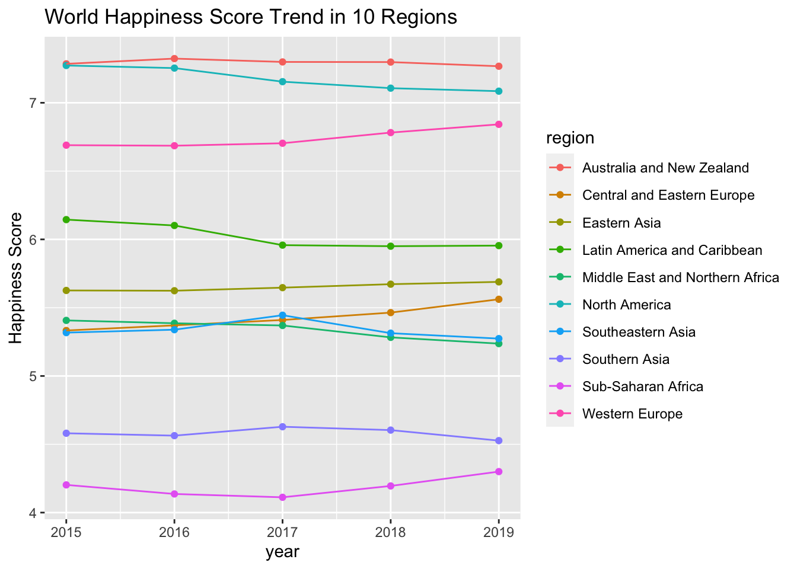
According to the scatter plot, from 2015 to 2019, Australia and New Zealand has stable happiness scores and it’s the highest amnong 10 regions. North America has second highest happiness score among 10 regions with the highest happiness score in year 2015 and gradually decreasing trend. Western Europe has the third highest happiness score with an increasing trend in 5 years. Latin America and Caribbean has the fourth highest happiness score with a decreasing trend in 5 years. Eastern Asia has the fifth highest happiness score with a stable trend. Middle East and Northern Africa, Southeastern Asia, and Central and Eastern Europe have comparative happiness score from 2015 to 2017, but Central and Eastern Europe has a increasing trend and higher happiness score after year 2017 while the other two regions have a decreasing trend and lower happiness score after year 2017. Southern Asia and Sub-Saharan Africa has the second lowest and lowest happiness score in 5 years, respectively. However, Sub-Saharan Africa has shown an increasing trend while Southern Asia has shown an decreasing trend since year 2017.
hap_df |>
group_by(year) |>
summarise(
average_gdp_per_capita = mean(gdp_per_capita, na.rm = TRUE),
average_social_support = mean(social_support, na.rm = TRUE),
average_healthy_life_expectancy = mean(health_life_expectancy, na.rm = TRUE),
average_freedom_to_make_life_choices = mean(freedom_to_make_life_choices, na.rm = TRUE),
average_perception_of_corruption = mean(perception_of_corruption, na.rm = TRUE),
average_generosity = mean(generosity, na.rm = TRUE)
)|>
pivot_longer(
average_gdp_per_capita:average_generosity,
names_to ="factor",
names_prefix = "average_",
values_to = "average_score"
)|>
plot_ly(
x = ~year, y = ~average_score, color = ~factor,
type = "scatter", mode = "lines+markers", colors = "viridis") |>
layout(
title = "World Trends of Happiness Indicators from 2015 to 2019",
xaxis = list( title = "Year"),
yaxis = list(title = "Average Score"),
autosize = F, width = 800, height = 500
)The GDP per Capita increases from 2015 to 2017, then decreased from 2017 to 2018. There’s a slight increase from 2018 to 2019 but the world has the highest GDP per Capita in 2017. The social support decreased from 2015 to 201 with a significant increase from 2016 top 2017, then it stayed relatively stable. The healthy life expectancy score decreased from 2016 to 2017 then increased from 2017 to 2019. The freedom of choices decrease from 2015 to 2016, increased from 2016 to 2018 and decreased again in 2019. The preconception of corruption stayed relatively stable but the world generally is seeing increasing corruptions. The generosity decrease from 2017 to 2018 which in align with the trend of GDP per Capita, suggesting possible association between people’s income and their generosity around the world. However, it’s worth noting that the countries with highest income are not the countries with top generosity scores. Overall, social support and healthy life expectancy improved from 2015 to 2019.
happiness_score = read_csv("./Data/combined_happiness.csv")
predicted_model = lm(formula = score ~ gdp_per_capita + social_support + health_life_expectancy + freedom_to_make_life_choices + perception_of_corruption + generosity,
data = happiness_score)
predicted_model|>
broom::tidy()|>
knitr::kable()| term | estimate | std.error | statistic | p.value |
|---|---|---|---|---|
| (Intercept) | 2.1750674 | 0.0799098 | 27.219021 | 0.0000000 |
| gdp_per_capita | 1.1359972 | 0.0841455 | 13.500396 | 0.0000000 |
| social_support | 0.6458962 | 0.0809226 | 7.981656 | 0.0000000 |
| health_life_expectancy | 1.0127106 | 0.1320119 | 7.671359 | 0.0000000 |
| freedom_to_make_life_choices | 1.4812709 | 0.1634584 | 9.062068 | 0.0000000 |
| perception_of_corruption | 0.8582286 | 0.2234402 | 3.840976 | 0.0001326 |
| generosity | 0.5924416 | 0.1757022 | 3.371851 | 0.0007837 |
The variable “freedom to make life choices” exhibits the largest coefficient (1.4812709) with a highly significant p-value(<0.0000001), indicating it exerts the most substantial effect on happiness scores. Following this, “GDP per capita”, “Health life expectancy”, and “Social support” are also significant contributors to happiness in order of their estimates. “Perception of corruption” and “Generosity” also significantly impact happiness but to a lesser extent, based on their estimates and p-values.
data_2015 = happiness_score|>
filter(year == 2015)
model2015 = lm(formula = score ~ gdp_per_capita + social_support + health_life_expectancy + freedom_to_make_life_choices + perception_of_corruption + generosity,
data = data_2015)
model2015|>
broom::tidy()|>
knitr::kable()| term | estimate | std.error | statistic | p.value |
|---|---|---|---|---|
| (Intercept) | 1.8601849 | 0.1904824 | 9.7656541 | 0.0000000 |
| gdp_per_capita | 0.8606572 | 0.2203113 | 3.9065501 | 0.0001409 |
| social_support | 1.4088916 | 0.2226751 | 6.3271187 | 0.0000000 |
| health_life_expectancy | 0.9753090 | 0.3162930 | 3.0835619 | 0.0024325 |
| freedom_to_make_life_choices | 1.3334329 | 0.3850157 | 3.4633211 | 0.0006944 |
| perception_of_corruption | 0.7845381 | 0.4365328 | 1.7972032 | 0.0743018 |
| generosity | 0.3889329 | 0.3910029 | 0.9947057 | 0.3214707 |
In 2015, the variable “social support” exhibited the largest coefficient (1.4088916) with the lowest p-value(<0.0000001) among all variables. This indicated that it performed the most substantial effect on happiness score in 2015. Following “social support”, “freedom to make life choices”, “health life expectancy” and “gdp per capita” also appeared to have relatively high estimates with significant p-values , indicating that there were sufficient evidences to show their essential effects on happiness score. However, “perception of corruption” and “generosity” appeared to have p-values larger than 0.05 indicating that they didn’t have significant impact on happiness score.
data_2016 = happiness_score|>
filter(year == 2016)
model2016 = lm(formula = score ~ gdp_per_capita + social_support + health_life_expectancy + freedom_to_make_life_choices + perception_of_corruption + generosity,
data = data_2016)
model2016|>
broom::tidy()|>
knitr::kable()| term | estimate | std.error | statistic | p.value |
|---|---|---|---|---|
| (Intercept) | 2.1902936 | 0.1583237 | 13.8342722 | 0.0000000 |
| gdp_per_capita | 0.7214128 | 0.2171212 | 3.3226274 | 0.0011204 |
| social_support | 1.2297543 | 0.2297496 | 5.3525847 | 0.0000003 |
| health_life_expectancy | 1.4364028 | 0.3489120 | 4.1168054 | 0.0000632 |
| freedom_to_make_life_choices | 1.5139349 | 0.3879659 | 3.9022369 | 0.0001435 |
| perception_of_corruption | 0.9189270 | 0.4647615 | 1.9772014 | 0.0498518 |
| generosity | 0.1594941 | 0.3621060 | 0.4404626 | 0.6602362 |
In 2016, the variable “freedom to make life choices” exhibited the largest coefficient (1.5139349) with a significant p-value(0.0001435), while the variable “health life expectancy” and “social support” exhibited the second and the third largest coefficient and more significant p-values(<0.0001) in comparison to variable “freedom to make life choices”. This indicated that they all exhibited a very outstanding impact on happiness score in 2016. Following them, “perception of corruption” and “gdp per capita” also appeared to have relatively high estimates with p-values smaller than 0.05, indicating that there were sufficient evidences to show their effects on happiness score. However, variable “generosity” appeared to have p-values 0.6602362, which is larger than 0.05, indicating that it didn’t exhibit significant impact to 2016’s happiness score.
data_2017 = happiness_score|>
filter(year == 2017)
model2017 = lm(formula = score ~ gdp_per_capita + social_support + health_life_expectancy + freedom_to_make_life_choices + perception_of_corruption + generosity,
data = data_2017)
model2017|>
broom::tidy()|>
knitr::kable()| term | estimate | std.error | statistic | p.value |
|---|---|---|---|---|
| (Intercept) | 1.7430289 | 0.1873581 | 9.303195 | 0.0000000 |
| gdp_per_capita | 0.7844334 | 0.2045131 | 3.835615 | 0.0001849 |
| social_support | 1.1177711 | 0.2020608 | 5.531856 | 0.0000001 |
| health_life_expectancy | 1.2888803 | 0.3215255 | 4.008640 | 0.0000965 |
| freedom_to_make_life_choices | 1.4757152 | 0.3425093 | 4.308541 | 0.0000298 |
| perception_of_corruption | 0.8266072 | 0.4843307 | 1.706700 | 0.0899751 |
| generosity | 0.3807181 | 0.3293271 | 1.156049 | 0.2495240 |
In 2017, the variable “freedom to make life choices” and “health life expectancy” exhibited the largest 2 coefficient (1.4757152) and (1.2888803) with significant p-values (0.0000298) and (0.0000965) respectively, while the variable “social support” exhibited the third largest coefficient and more significant p-values(<0.000001) in comparison to variable “freedom to make life choices” and “health life expectancy”. This indicated that they all exhibited a very outstanding impacts on happiness score in 2017. Following them, “gdp per capita” also appeared to have relatively high estimates (0.7844334) with p-values (0.0001849), indicating that there were sufficient evidences to show a significant impact on happiness score. However, variable “perception of corruption” and “generosity” appeared to have p-values larger than 0.05, indicating that they didn’t exhibit significant impact to 2017’s happiness score.
data_2018 = happiness_score|>
filter(year == 2018)
model2018 = lm(formula = score ~ gdp_per_capita + social_support + health_life_expectancy + freedom_to_make_life_choices + perception_of_corruption + generosity,
data = data_2018)
model2018|>
broom::tidy()|>
knitr::kable()| term | estimate | std.error | statistic | p.value |
|---|---|---|---|---|
| (Intercept) | 1.8234561 | 0.1977108 | 9.222845 | 0.0000000 |
| gdp_per_capita | 0.9017459 | 0.2423630 | 3.720642 | 0.0002816 |
| social_support | 1.1150219 | 0.2117195 | 5.266505 | 0.0000005 |
| health_life_expectancy | 0.9671218 | 0.3425058 | 2.823666 | 0.0054021 |
| freedom_to_make_life_choices | 1.3984419 | 0.3185447 | 4.390096 | 0.0000214 |
| perception_of_corruption | 0.7277888 | 0.5277904 | 1.378935 | 0.1699951 |
| generosity | 0.5235668 | 0.4717544 | 1.109829 | 0.2688726 |
In 2018, the variable “freedom to make life choices” and “social support” exhibited the largest 2 coefficient (1.3984419) and (1.1150219) with significant p-values (0.0000214) and (0.0000005) respectively, indicating that they play very substantial job on impacting happiness score. Following them, the variables “health life expectancy” and “gdp per capita” exhibited relatively large coefficients with significant p-values(<0.01), indicating that they also exhibited very outstanding impacts on happiness score in 2018. However, variable “perception of corruption” and “generosity” appeared to have p-values larger than 0.05, indicating that they didn’t exhibit significant impact to 2018’s happiness score.
data_2019 = happiness_score|>
filter(year == 2019)
model2019 = lm(formula = score ~ gdp_per_capita + social_support + health_life_expectancy + freedom_to_make_life_choices + perception_of_corruption + generosity,
data = data_2019)
model2019|>
broom::tidy()|>
knitr::kable()| term | estimate | std.error | statistic | p.value |
|---|---|---|---|---|
| (Intercept) | 1.7952202 | 0.2110734 | 8.5051942 | 0.0000000 |
| gdp_per_capita | 0.7753716 | 0.2182254 | 3.5530776 | 0.0005103 |
| social_support | 1.1241916 | 0.2369001 | 4.7454252 | 0.0000048 |
| health_life_expectancy | 1.0781427 | 0.3345385 | 3.2227764 | 0.0015596 |
| freedom_to_make_life_choices | 1.4548324 | 0.3753378 | 3.8760610 | 0.0001587 |
| perception_of_corruption | 0.9722802 | 0.5423607 | 1.7926818 | 0.0750526 |
| generosity | 0.4897834 | 0.4977455 | 0.9840036 | 0.3267089 |
In 2019, the variable “freedom to make life choices” and “social support” exhibited the largest 2 coefficient (1.4548324) and (1.1241916) with significant p-values (0.0001587) and (0.0000048) respectively, indicating that they play very substantial job on impacting happiness score. Following them, the variables “health life expectancy” and “gdp per capita” exhibited relatively large coefficients with significant p-values(<0.01), indicating that they also exhibited very outstanding impacts on happiness score in 2019. However, variable “perception of corruption” and “generosity” appeared to have p-values larger than 0.05, indicating that they didn’t exhibit significant impact to 2019’s happiness score.
According to the linear regressions performed separately for each year from 2015 to 2019, the main factor that impacted the happiness score changed over time. In 2015, “social support” had the most substantial impact on the happiness score, and its impact kept being significant until 2019. In the following 4 years, “freedom to make life choices” appeared to make the greatest impact on the happiness score. “health life expectancy” also impacted significantly on the happiness score since it exhibited the second or the third largest coefficient in the linear regression model from 2016 to 2019.
central_east = happiness_score|>
filter(region == "Central and Eastern Europe")
model1 = lm(formula = score ~ gdp_per_capita + social_support + health_life_expectancy + freedom_to_make_life_choices + perception_of_corruption + generosity,
data = central_east)
model1|>
broom::tidy()|>
knitr::kable()| term | estimate | std.error | statistic | p.value |
|---|---|---|---|---|
| (Intercept) | 3.1506152 | 0.3761585 | 8.3757648 | 0.0000000 |
| gdp_per_capita | 1.0993611 | 0.2033891 | 5.4052129 | 0.0000003 |
| social_support | 0.5447398 | 0.1437145 | 3.7904299 | 0.0002240 |
| health_life_expectancy | -0.1987347 | 0.4097214 | -0.4850485 | 0.6284110 |
| freedom_to_make_life_choices | 1.7050905 | 0.3442244 | 4.9534273 | 0.0000021 |
| perception_of_corruption | -0.5976465 | 0.5501586 | -1.0863167 | 0.2792328 |
| generosity | 0.6492740 | 0.5101488 | 1.2727149 | 0.2052593 |
From 2015 to 2019, in Central and Eastern European countries, variables “freedom to make life choices” exhibited the largest coefficient(1.7050905) with significant p-value(0.0000021) indicating that it impacted substantially on happiness score. Meanwhile, variables “gdp per capita” and “social support” exhibited relatively high coefficients (1.0993611) and (0.5447398) respectively with significant p-value (<0.001) showing their essential impact on happiness score. Variables “health life expectancy”, “perception of corruption” and “generosity” exhibited smaller and even negative coefficients; however, these variables did not exhibit significant p-values(>0.05) indicating that it was not significant enough to tell that they had impact on happiness score.
east_asia = happiness_score|>
filter(region == "Eastern Asia")
model2 = lm(formula = score ~ gdp_per_capita + social_support + health_life_expectancy + freedom_to_make_life_choices + perception_of_corruption + generosity,
data = east_asia)
model2|>
broom::tidy()|>
knitr::kable()| term | estimate | std.error | statistic | p.value |
|---|---|---|---|---|
| (Intercept) | 0.6698077 | 0.9885689 | 0.6775529 | 0.5048144 |
| gdp_per_capita | 2.6321054 | 0.3987773 | 6.6004398 | 0.0000010 |
| social_support | 0.1680339 | 0.2050669 | 0.8194102 | 0.4209627 |
| health_life_expectancy | 1.5122195 | 0.7333569 | 2.0620513 | 0.0506769 |
| freedom_to_make_life_choices | 1.8238357 | 0.9140536 | 1.9953269 | 0.0579853 |
| perception_of_corruption | -6.1001405 | 1.5633140 | -3.9020571 | 0.0007172 |
| generosity | 0.8764310 | 0.8352973 | 1.0492444 | 0.3049665 |
From 2015 to 2019, in Eastern Asian countries, variable “perception of corruption” exhibited extremely high coefficient (-6.1001405) with a significant p-value(0.0007172) indicating that “perception of corruption” had extremely substantial negative impact on happiness score. Variable “gdp per capita” exhibited the second highest coefficient (2.6321054) with a significant p-value (0.0000010) indicating that it had essential impact on happiness score. However, other variables exhibited p-values larger than 0.05 showing that it was not significant enough to tell that they had impacts on happiness score.
latin_caribbean = happiness_score|>
filter(region == "Latin America and Caribbean")
model3 = lm(formula = score ~ gdp_per_capita + social_support + health_life_expectancy + freedom_to_make_life_choices + perception_of_corruption + generosity,
data = latin_caribbean)
model3|>
broom::tidy()|>
knitr::kable()| term | estimate | std.error | statistic | p.value |
|---|---|---|---|---|
| (Intercept) | 2.9870953 | 0.3603714 | 8.2889347 | 0.0000000 |
| gdp_per_capita | 1.4869935 | 0.2138900 | 6.9521417 | 0.0000000 |
| social_support | -0.6315397 | 0.2278693 | -2.7714998 | 0.0066120 |
| health_life_expectancy | 1.7455082 | 0.3819569 | 4.5699082 | 0.0000135 |
| freedom_to_make_life_choices | 2.4568168 | 0.3534921 | 6.9501327 | 0.0000000 |
| perception_of_corruption | 1.3409006 | 0.9170861 | 1.4621317 | 0.1467204 |
| generosity | -0.3165373 | 0.5087516 | -0.6221843 | 0.5351824 |
From 2015 to 2019, in Latin American and Caribbean countries, variable “freedom to make life choices” had the most significant impact on happiiness score since it exhibited the highest coefficient(2.4568168) with extremely significant p-value (<0.000001). Following this, variables “health life expectancy” and “gdp per capita” exhibited relatively high coefficients (1.7455082) and (1.4869935) respectively with significant p-values indicating their essential impact on happiness score. Variable “social support” exhibited a negative coefficient “-0.6315397” with a significant p-value (0.0066120) indicating that “social support” had negative impact on happiness score. However, variables “perception of corruption” and “generosity” appear to have p-values(>0.05) indicating that it was not significant enough to tell that they had impacts on happiness score.
east_africa = happiness_score|>
filter(region == "Middle East and Northern Africa")
model4 = lm(formula = score ~ gdp_per_capita + social_support + health_life_expectancy + freedom_to_make_life_choices + perception_of_corruption + generosity,
data = east_africa)
model4|>
broom::tidy()|>
knitr::kable()| term | estimate | std.error | statistic | p.value |
|---|---|---|---|---|
| (Intercept) | 1.5472699 | 0.2567575 | 6.0261911 | 0.0000000 |
| gdp_per_capita | 1.5506958 | 0.2511559 | 6.1742356 | 0.0000000 |
| social_support | 0.4364518 | 0.2065005 | 2.1135633 | 0.0373830 |
| health_life_expectancy | 2.0670148 | 0.4620345 | 4.4737244 | 0.0000229 |
| freedom_to_make_life_choices | 1.3532650 | 0.4613435 | 2.9333131 | 0.0042752 |
| perception_of_corruption | 0.3720748 | 0.6673868 | 0.5575099 | 0.5785945 |
| generosity | -1.4347645 | 0.4915314 | -2.9189679 | 0.0044584 |
From 2015 to 2019, in Middle Eastern and Northern African countries, variables “health life expectancy” exhibited the largest coefficient (2.0670148) with a significant p-value(0.0000229), while the variable “gdp per capita” exhibited the second largest coefficient and more significant p-values(<0.0001) in comparison to variable “health life expectancy”. The variables “generosity”,“freedom to make life choices” and “social support” also exhibited relatively large coefficient with significant p-value. This indicated that they all exhibited a very outstanding impact on happiness score. However, variable “perception of corruption” appeared to have p-values 0.5785945, which is larger than 0.05, indicating that it didn’t exhibit significant impact to the happiness score.
north_america = happiness_score|>
filter(region == "North America")
model5 = lm(formula = score ~ gdp_per_capita + social_support + health_life_expectancy + freedom_to_make_life_choices + perception_of_corruption + generosity,
data = north_america)
model5|>
broom::tidy()|>
knitr::kable()| term | estimate | std.error | statistic | p.value |
|---|---|---|---|---|
| (Intercept) | 5.7461328 | 1.1568751 | 4.9669432 | 0.0156747 |
| gdp_per_capita | 0.2906872 | 0.4853376 | 0.5989381 | 0.5914238 |
| social_support | -0.2790530 | 0.1790157 | -1.5588190 | 0.2169302 |
| health_life_expectancy | 0.4041180 | 0.4999375 | 0.8083371 | 0.4780512 |
| freedom_to_make_life_choices | 0.9868637 | 0.8267570 | 1.1936563 | 0.3183984 |
| perception_of_corruption | 1.4273085 | 0.5532336 | 2.5799383 | 0.0817842 |
| generosity | 0.4721823 | 0.4867702 | 0.9700313 | 0.4035808 |
From 2015 to 2019, in North American countries, none of the 6 variables exhibited significant p-value since all their p-values were greater than 0.05 indicating that none of the variables exhibit significant impact to the happiness score.
southeastern_asia = happiness_score|>
filter(region == "Southeastern Asia")
model6 = lm(formula = score ~ gdp_per_capita + social_support + health_life_expectancy + freedom_to_make_life_choices + perception_of_corruption + generosity,
data = southeastern_asia)
model6|>
broom::tidy()|>
knitr::kable()| term | estimate | std.error | statistic | p.value |
|---|---|---|---|---|
| (Intercept) | 3.5557237 | 0.7682308 | 4.6284577 | 0.0000442 |
| gdp_per_capita | 1.6457687 | 0.3325444 | 4.9490193 | 0.0000165 |
| social_support | 0.3338875 | 0.3197225 | 1.0443039 | 0.3031200 |
| health_life_expectancy | 0.7927899 | 0.5905490 | 1.3424625 | 0.1876252 |
| freedom_to_make_life_choices | -0.9335115 | 1.0718734 | -0.8709158 | 0.3894160 |
| perception_of_corruption | -0.6520931 | 0.6148682 | -1.0605413 | 0.2957725 |
| generosity | 0.0954657 | 0.4326026 | 0.2206775 | 0.8265568 |
From 2015 to 2019, in Southeastern Asian countries, only variable “gdp per capita” exhibited relatively high coefficient (1.6457687) with significant p-value (0.0000165) indicating that “gdp per capita” had substantial impact on happiness scrore. Despite “gdp per capita”, none of other variables exhibited significant p-values indicating that we did not have sufficient evidence to show their impact on happiness score.
southern_asia = happiness_score|>
filter(region == "Southern Asia")
model7 = lm(formula = score ~ gdp_per_capita + social_support + health_life_expectancy + freedom_to_make_life_choices + perception_of_corruption + generosity,
data = southern_asia)
model7|>
broom::tidy()|>
knitr::kable()| term | estimate | std.error | statistic | p.value |
|---|---|---|---|---|
| (Intercept) | 2.9020228 | 0.3943552 | 7.3589065 | 0.0000001 |
| gdp_per_capita | 0.1307995 | 0.5138800 | 0.2545332 | 0.8009437 |
| social_support | 0.3855854 | 0.3180950 | 1.2121705 | 0.2355768 |
| health_life_expectancy | 1.5212822 | 0.8819818 | 1.7248452 | 0.0955793 |
| freedom_to_make_life_choices | -1.3276433 | 0.8445746 | -1.5719668 | 0.1271914 |
| perception_of_corruption | 8.8312157 | 2.1766502 | 4.0572507 | 0.0003603 |
| generosity | 0.4649207 | 0.9043858 | 0.5140734 | 0.6112343 |
From 2015 to 2019, in Southern Asian countries, only one variable, “perception of corruption”, exhibited significant p-value (0.0003603) with extremely high coefficient (8.8312157) indicating that among all 6 variables, “perception of corruption” had the largest impact on happiness score.
sub_africa = happiness_score|>
filter(region == "Sub-Saharan Africa")
model8 = lm(formula = score ~ gdp_per_capita + social_support + health_life_expectancy + freedom_to_make_life_choices + perception_of_corruption + generosity,
data = sub_africa)
model8|>
broom::tidy()|>
knitr::kable()| term | estimate | std.error | statistic | p.value |
|---|---|---|---|---|
| (Intercept) | 2.6862788 | 0.1737404 | 15.4614553 | 0.0000000 |
| gdp_per_capita | 0.6020415 | 0.1539281 | 3.9111867 | 0.0001280 |
| social_support | 0.6583385 | 0.1332112 | 4.9420649 | 0.0000017 |
| health_life_expectancy | -0.0725829 | 0.2444136 | -0.2969676 | 0.7668173 |
| freedom_to_make_life_choices | 0.9605341 | 0.2729970 | 3.5184786 | 0.0005437 |
| perception_of_corruption | -0.6583010 | 0.4600525 | -1.4309258 | 0.1541028 |
| generosity | 2.0618730 | 0.4998157 | 4.1252665 | 0.0000555 |
From 2015 to 2019, in Sub- Saharan African countries, variable “generosity” exhibited coefficient (2.0618730) with significant p-value (0.0000555) indicating that it had the most substantial impact on happiness score. Following this, variables “freedom to make life choice”, “social support” and “gdp per capita” also had essential impact on happiness score since they had relatively large coefficient and significant p-value(<0.001). However, “health life expectancy” and “perception of corruption” did not appear to have significant p-value (>0.05) indicating that they did not have significant impact on happiness score.
west_europe = happiness_score|>
filter(region == "Western Europe")
model9 = lm(formula = score ~ gdp_per_capita + social_support + health_life_expectancy + freedom_to_make_life_choices + perception_of_corruption + generosity,
data = west_europe)
model9|>
broom::tidy()|>
knitr::kable()| term | estimate | std.error | statistic | p.value |
|---|---|---|---|---|
| (Intercept) | 2.1188003 | 0.7020829 | 3.017878 | 0.0032440 |
| gdp_per_capita | 0.8563506 | 0.3675997 | 2.329574 | 0.0218810 |
| social_support | 0.7417660 | 0.1914877 | 3.873701 | 0.0001936 |
| health_life_expectancy | 1.1950538 | 0.5049965 | 2.366459 | 0.0199258 |
| freedom_to_make_life_choices | 0.8686215 | 0.3881809 | 2.237672 | 0.0275070 |
| perception_of_corruption | 2.7240472 | 0.3798791 | 7.170826 | 0.0000000 |
| generosity | 1.2352683 | 0.3167298 | 3.900070 | 0.0001763 |
From 2015 to 2019, in Western European countries, all 6 variables had significant impact on happiness score since their p-value were all smaller than 0.05. Among these variables, “perception of corruption” exhibited the largest coefficient and the smallest p-valu indicating that it had the most significant impact on happiness score.
According to the linear regression model performed separately according to their regions, factors that impacted the happiness score varied a lot. One extreme case took place in North American countries since none of the factors were playing significant roles in impacting their happiness score; another extreme case took place in western- European countries since all 6 variables had significant impact on the happiness score while “perception of corruption” was the main factors. The linear regression models also indicate that both Southern Asian countries and Southeastern Asian countries had only one factor, “perception of corruption” and “gdp per capita” respectively with extremely significant p-values. “freedom to make life choices” appeared to make the greatest impact on the happiness score in Central and Eastern European and Latin American and Caribbean countries countries.”perception of corruption” played a substantial role on impacting the happiness score in southern Asian countries and eastern Asian countries.
According to the regression models for Happiness Score Prediction from 2015 to 2019, “Freedom to make life choices” and “social support” consistently exhibit the largest coefficients across all years (2015-2019), indicating their substantial impact on happiness scores. However, “Perception of corruption” and “generosity” consistently have p-values larger than 0.05 across all years, indicating that they do not exhibit a significant impact on happiness scores. “Health life expectancy” and “gdp per capita” consistently exhibit relatively large coefficients with significant p-values, emphasizing the importance of health and economic factors in explaining happiness scores over time. Therefore, while some variables consistently exhibit significance, there are variations in the significance levels across years. Potential year-to-year fluctuations in the factors influencing happiness scores should be expected and noticed in the upcoming years.
According to our regression models for Happiness Prediction across different regions, we can tell that there is diversity in the patterns observed across continents, with each region having its own unique set of influential factors on happiness. The impact of specific variables varies across different regions. For example: “Freedom to make life choices” was particularly substantial in Central and Eastern European and Latin American and Caribbean countries; “Perception of corruption” played a substantial role in both Southern Asian and Eastern Asian countries. Meanwhile, there are limited significant factors in Certain Regions: Southern Asian and Southeastern Asian countries both had only one significant factor with extremely significant p-values; “Perception of corruption” was significant for Southern Asian countries; “GDP per capita” was significant for Southeastern Asian countries. The findings suggest that different regions may prioritize different factors when it comes to happiness. Understanding these regional priorities can be valuable for policymaking and interventions tailored to specific needs.
Social Support
At Country Level
At Region Level
Regional Trend
At countries level, from 2015 to 2019, Iceland has the highest social support score. Benin and Syria has the lowest. Iceland, Ireland, Denmark, New Zealand and Finland are the top 5 countries with the highest social support score. Benin, Syria, Togo, Burundi, Malawi are the bottom 5 countries with the lowest social support scores.
At regional level, from 2015 to 2019, Australia and New Zealand has the highest social support score and Southern Asia has the lowest. The trend between 10 regions is relatively similar, with a decreased from 2015 to 2016, then an increase trend afterwards.